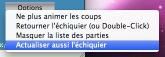

Utilisez  pour paser en mode “Full live”
<applet code="mcvim_chessboard.ChessBoard.class" align="baseline" width="630" height="560">
<param name="pgngamefile" value="games/live.pgn">
<param name="refreshInterval" value=1>
<param name="refreshOnlySheetMoves" value="on">
</applet>
Voir le pgn